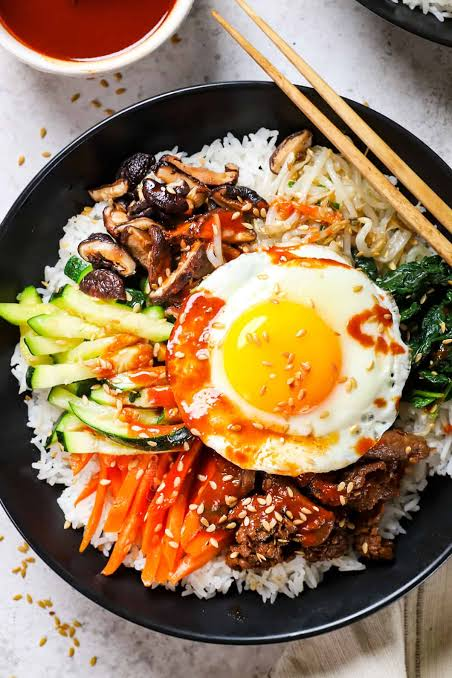
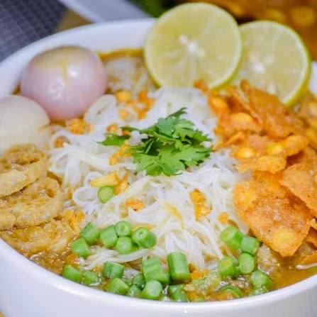
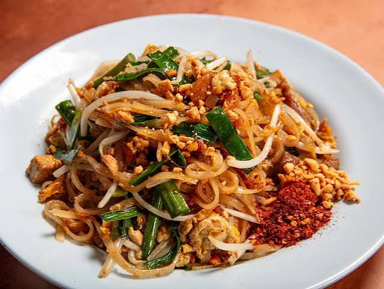

Bibimbap(South Korea)

Sushi (Japan)

Mohinga(Myanmar)

Pad Thai(Thailand)
အစားအစာများ
မဖြစ်မနေမြည်းစမ်းကြည့်သင့်သည့်အာရှနိုင်ငံအသီးသီးမှအစားအသောက်များ
Mohinga

Shan Noodles
မြန်မာ့အစားအစာ ချက်ပြုတ်နည်း လမ်းညွှန်
မြန်မာ့အစားအစာ ချက်ပြုတ်နည်းလမ်းညွှန် လေ့လာပါ